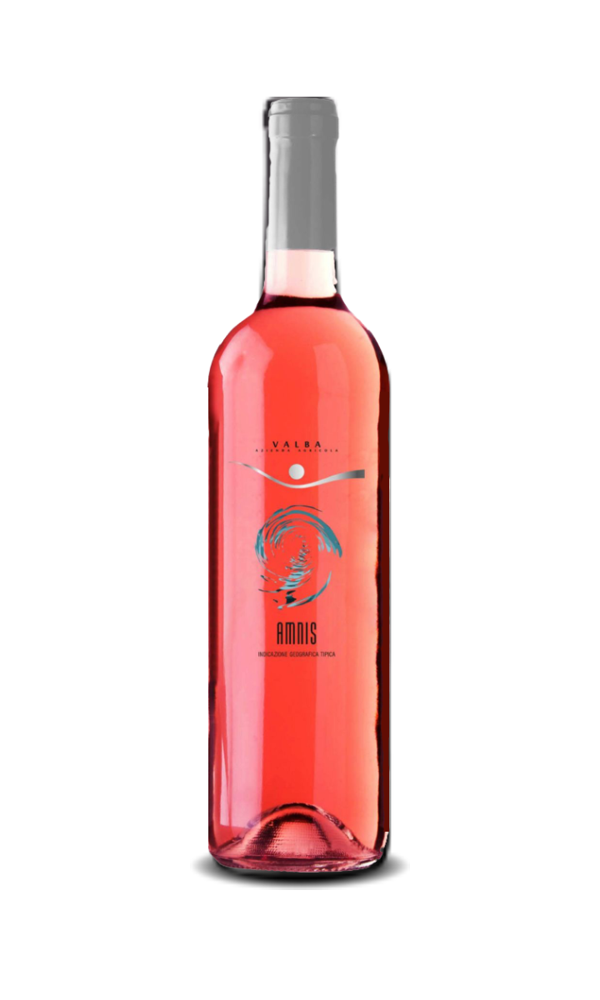
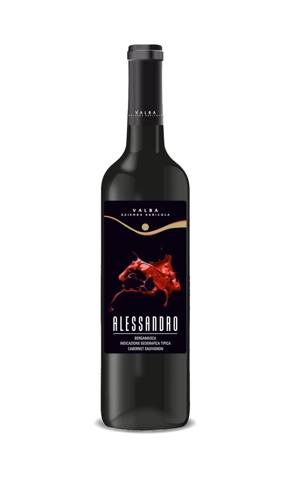
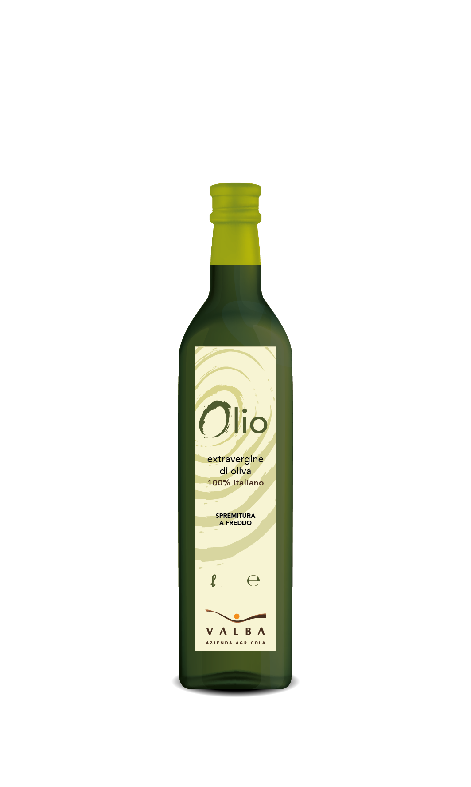

Ai piedi del Monte Misma, a 400 metri di altitudine, la famiglia Nembrini/Micheli coltiva vini di piacevole armonia e dal corpo intenso.
L'azienda VALBA sorge a Cenate Sopra nella provincia di Bergamo, ai piedi del Monte Misma. Immersa nel verde delle vigne e all'ombra dei boschi che ricoprono il territorio, la famiglia Nembrini/Micheli ha ridato vita a un vecchio vigneto dismesso che, anno dopo anno, regala vini di piacevole armonia e dal corpo intenso.
Scopri l'Azienda
Nel mondo nulla di grande è stato fatto senza una buona dose di passione.
Se camminassimo solo nelle giornate di sole non raggiungeremmo mai la destinazione.
L'eccellenza è il risultato graduale dello sforzo costante di far sempre meglio.






Olio d'oliva di categoria superiore ottenuto direttamente dalla spremitura a freddo di olive 100% italiane, estratto unicamente mediante procedimenti meccanici. Un prodotto che esprime tutta la genuinità del nostro territorio bergamasco.
Siamo aperti per visite guidate alla cantina e degustazioni dei nostri vini. Un'esperienza autentica tra i vigneti del Monte Misma, a contatto con la natura e la tradizione vitivinicola bergamasca.
Degustazione vini guidata
Visita alla cantina
Panorama sui vigneti